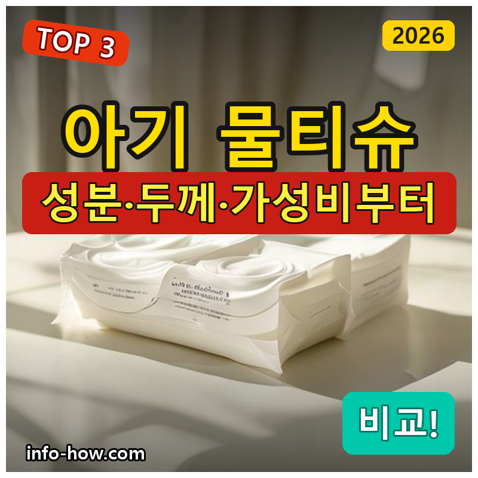
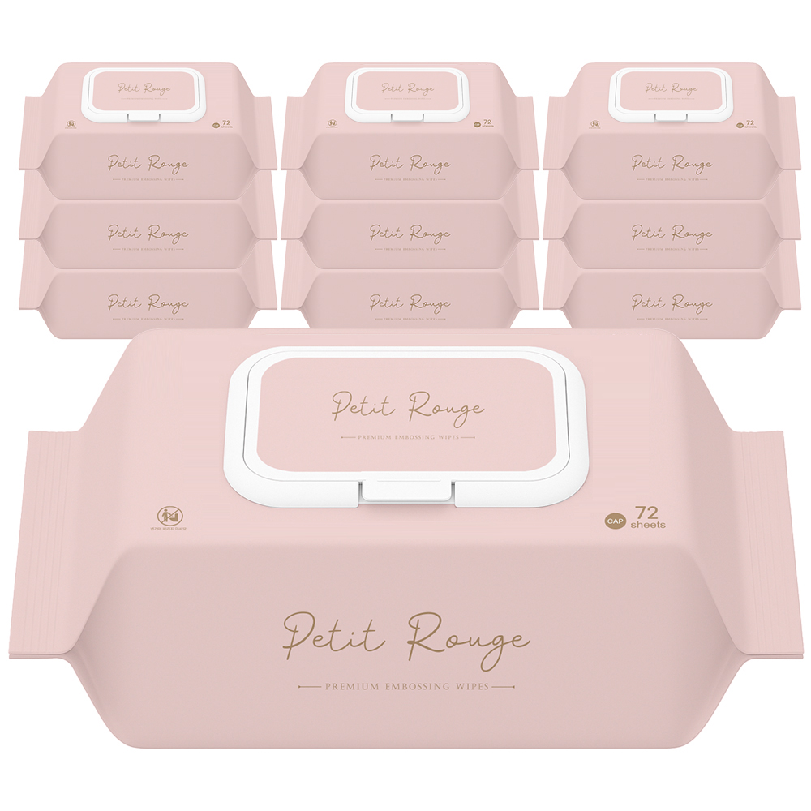
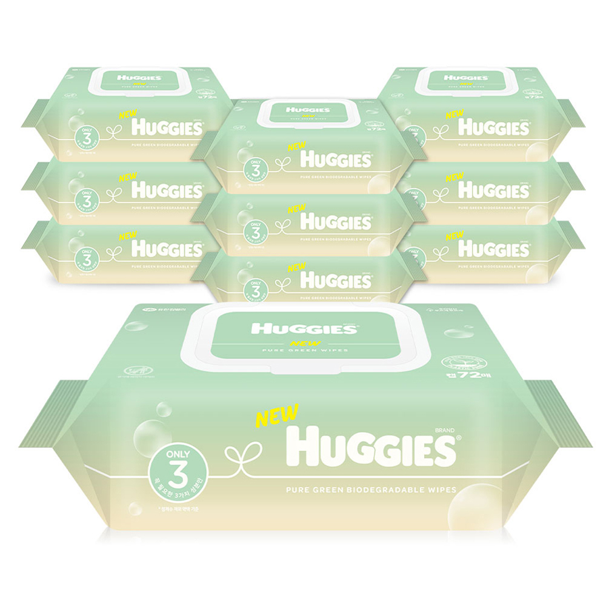
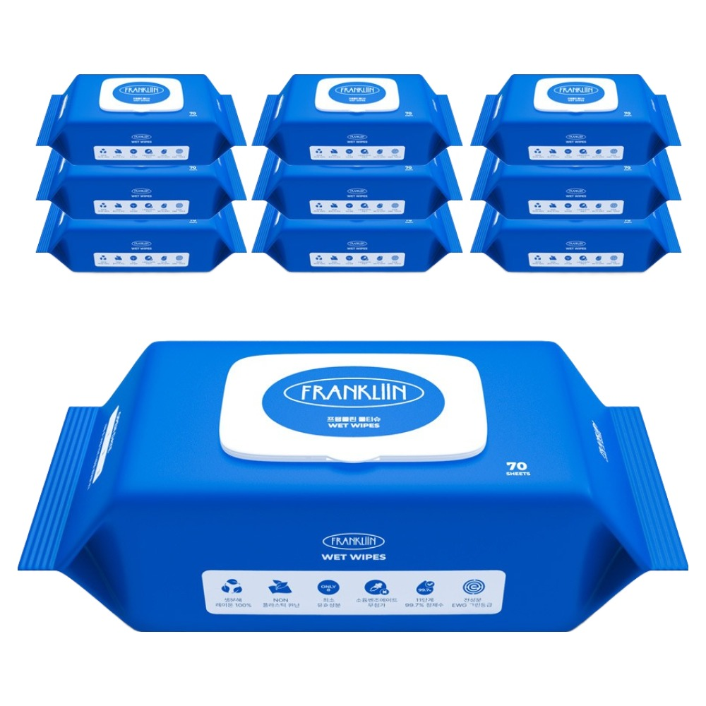

홈 › 제품리뷰 › 생활/가전
아기 물티슈, 가성비냐 하기스냐
작성: 생활서식 모음 · 2026-08-23

파트너스 활동의 일환으로 일정액의 수수료를 지급받습니다
🛒 오늘의 쿠팡 특가 보러가기 →
아기 물티슈, 매일 쓰는 거라 뭘 살까 고민되죠?
핵심은 "성분(저자극)과 두께, 가성비" 3대 를※ 아기 피부가 예민하면 소량 먼저 사용해보고, 이상 시 사용을 중단하세요.
📋 목차
아기 물티슈, 가성비냐 하기스냐 — 결론 먼저 스펙 비교표: 한눈에 보기 아기 물티슈 고를 때 봐야 할 3가지 가성비냐 브랜드냐, 뭘 사야 할까? 자주 묻는 질문 (FAQ) 결론: 한 줄 요약
아기 물티슈, 가성비냐 하기스냐 — 결론 먼저
아기 물티슈는 "성분(저자극)과 두께·가성비" 로 갈려요.가성비 엠보싱 , 믿을 브랜드면 하기스 , 넉넉한 대용량이면 프리미엄 10팩 이 무난합니다.
1 가성비·넉넉 (가성비 초이스)
가성비

가성비 엠보싱
1. 쁘띠루쥬 프리미엄 엠보싱 영유아 물티슈 (캡형)
브랜드·프리미엄은 아니어도
추천 대상
물티슈를 저렴하게 넉넉히 쓰려는 분 엠보싱으로 잘 닦이는 걸 원하는 분 캡형으로 한 장씩 편하게 뽑으려는 분 장점
1만원대로 부담 없이 넉넉히 사용 엠보싱이라 닦임이 좋고 도톰함 캡형이라 마르지 않고 한 장씩 편하게 뽑음 단점
이 제품은 가성비·넉넉용 입니다. 믿는 브랜드면 2번 하기스, 대용량이면 3번 프리미엄으로 가세요. "넉넉히"면 가성비 좋아요.
한줄 리뷰
"저렴하게 넉넉히 쓰는 물티슈"면 쁘띠루쥬가 무난합니다. 엠보싱이라 잘 닦여요. 브랜드·대용량이면 2·3번을 보세요.
주요 스펙
제품: 쁘띠루쥬 엠보싱 영유아 물티슈 타입: 캡형 특징: 엠보싱 배송: 로켓배송 가격: 약 10,900원 (변동 가능) ※ 실제 스펙·가격과 차이가 있을 수 있습니다
2 브랜드·저자극 (베스트 초이스)
베스트

믿는 브랜드
2. 하기스 퓨어그린 생분해 아기물티슈 (캡형)
믿을 수 있는 하기스에
추천 대상
검증된 브랜드로 안심하고 쓰려는 분 생분해 등 친환경을 신경 쓰는 분 아기 피부에 무난한 물티슈를 원하는 분 장점
하기스라 브랜드 신뢰가 높음 생분해 소재로 환경 부담이 적음 캡형이라 보관·사용이 편함 단점
저렴한 가성비면 1번, 대용량 물량이면 3번입니다. 2번은 "하기스+생분해" 의 실속 구간 — 브랜드·안심에 가장 무난합니다.
한줄 리뷰
"믿는 브랜드로 안심하고"면 하기스가 좋습니다. 생분해라 마음이 편해요. 대용량이면 3번을 보세요.
주요 스펙
제품: 하기스 퓨어그린 생분해 아기물티슈 타입: 캡형 특징: 생분해 배송: 로켓배송 가격: 약 16,500원 (변동 가능) ※ 실제 스펙·가격과 차이가 있을 수 있습니다
3 대용량·상비 (프리미엄)
프리미엄

대용량 프리미엄
3. FRANKLIIN 아기 물티슈 (캡형, 70매 10개)
70매 10개 대용량으로
추천 대상
물티슈를 대량으로 상비하려는 분 자주 쓰는 만큼 개당 저렴하게 사려는 분 캡형 대용량을 원하는 분 장점
70매 10개라 넉넉히 상비 가능 대용량이라 개당 단가가 저렴 캡형이라 사용·보관이 편함 단점
저렴한 가성비면 1번, 브랜드 안심이면 2번 하기스가 합리적입니다. 3번은 대용량 상비(70매 10개) 를 원하는 분에게 어울립니다.
한줄 리뷰
"대량으로 넉넉히 상비"면 FRANKLIIN 10개가 좋습니다. 개당 저렴해요. 소량이면 1·2번이 합리적입니다.
주요 스펙
제품: FRANKLIIN 아기 물티슈 구성: 70매 × 10개 타입: 캡형 배송: 로켓배송 가격: 약 27,900원 (변동 가능) ※ 실제 스펙·가격과 차이가 있을 수 있습니다
스펙 비교표: 한눈에 보기
가격·풍량·무게 중 본인에게 중요한 기준부터 보세요. "최고" 표시는 3제품 중 객관적 1위 값입니다.
← 좌우로 스크롤 →
아기 물티슈 고를 때 봐야 할 3가지
성분·두께만 챙겨도 안심입니다.
1) 성분 — 저자극
순수·저자극·무향 등 아기 피부에 맞는 성분 확인 유해 성분 무첨가·인증(안전기준) 표기 참고 피부가 예민하면 소량 먼저 써보기 2) 두께·엠보싱 — 사용감
도톰하고 엠보싱이면 잘 닦이고 덜 찢어짐 너무 얇으면 여러 장 써야 해 비경제적 물기·촉촉함 정도도 취향 3) 캡형·용량 — 편의·가성비
캡형은 마르지 않고 한 장씩 뽑기 편함 자주 쓰면 대용량(다개수)이 개당 저렴 휴대용 소포장도 외출에 유용 가성비냐 브랜드냐, 뭘 사야 할까?
성분 중시와 사용량만 정하면 답이 나옵니다.
가성비·넉넉: 1번 쁘띠루쥬 → 저렴하게브랜드·저자극: 2번 하기스 → 안심대용량·상비: 3번 FRANKLIIN → 넉넉히자주 묻는 질문 (FAQ)
Q1. 아기 물티슈는 어떤 성분을 봐야 하나요? 저자극·무향·안전기준 표기를 확인하세요. 아기 피부는 예민하므로 순수·저자극, 유해 성분 무첨가, 안전 기준(피부 자극 테스트 등) 표기를 확인하는 것이 좋습니다. 향료·방부제에 민감할 수 있으니 무향·저자극 제품이 무난합니다. 피부가 특히 예민하면 소량 먼저 사용해보고 이상 반응이 없는지 살피세요.
Q2. 캡형과 리필형 중 뭐가 나은가요? 보관·사용 편의는 캡형, 가성비는 리필형입니다. 캡형은 뚜껑이 있어 마르지 않고 한 장씩 뽑기 편하며, 리필형은 캡 케이스에 넣어 쓰는 방식으로 단가가 저렴합니다. 처음엔 캡형으로 쓰고 이후 리필로 채우면 편의와 가성비를 함께 잡을 수 있습니다.
Q3. 물티슈 두께는 두꺼울수록 좋은가요? 도톰하면 잘 닦이지만 취향·용도에 따라 다릅니다. 도톰하고 엠보싱이 있으면 한 장으로 잘 닦이고 덜 찢어져 편리합니다. 다만 너무 두꺼우면 뻣뻣할 수 있고, 얇으면 여러 장을 쓰게 됩니다. 아기 엉덩이·손 닦기엔 적당히 도톰한 것이 무난합니다.
Q4. 대용량으로 사두면 오래 두고 써도 되나요? 유통기한 내에 마르지 않게 보관하면 됩니다. 물티슈도 유통기한이 있으니 그 안에 사용하고, 캡을 잘 닫아 마르지 않게 보관하세요. 개봉 후 오래 두면 마르거나 위생상 좋지 않을 수 있습니다. 자주 쓰는 가정은 대용량이 경제적이지만, 사용 속도에 맞춰 구매하는 것이 좋습니다.
Q5. 아기 피부에 트러블이 생기면 어떻게 하나요? 사용을 멈추고 필요하면 전문가와 상담하세요. 특정 물티슈 사용 후 발진·붉어짐 등이 생기면 사용을 중단하고 다른 저자극 제품으로 바꿔보세요. 증상이 지속되거나 심하면 소아과 등 전문가와 상담하는 것이 안전합니다. 물티슈는 어디까지나 위생용품이며, 피부 상태가 걱정되면 전문가 판단이 우선입니다.
결론: 한 줄 요약
1) 쁘띠루쥬 엠보싱 — 약 10,900원 / 가성비·넉넉. 캡형.2) 하기스 퓨어그린 — 약 16,500원 / 브랜드·저자극. 생분해.3) FRANKLIIN 10개 — 약 27,900원 / 대용량·상비. 70매 10개.이 포스팅은 쿠팡 파트너스 활동의 일환으로, 이에 따른 일정액의 수수료를 제공받습니다.